Annie Leibovitz — overlay proofs
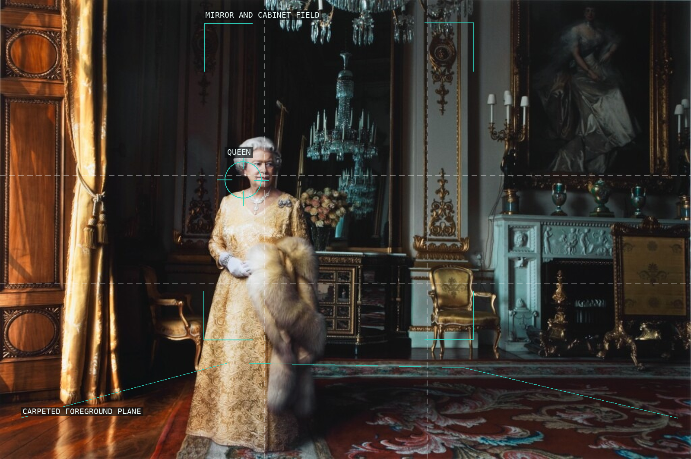
01 — Queen Elizabeth II, Buckingham Palace, London (2007)
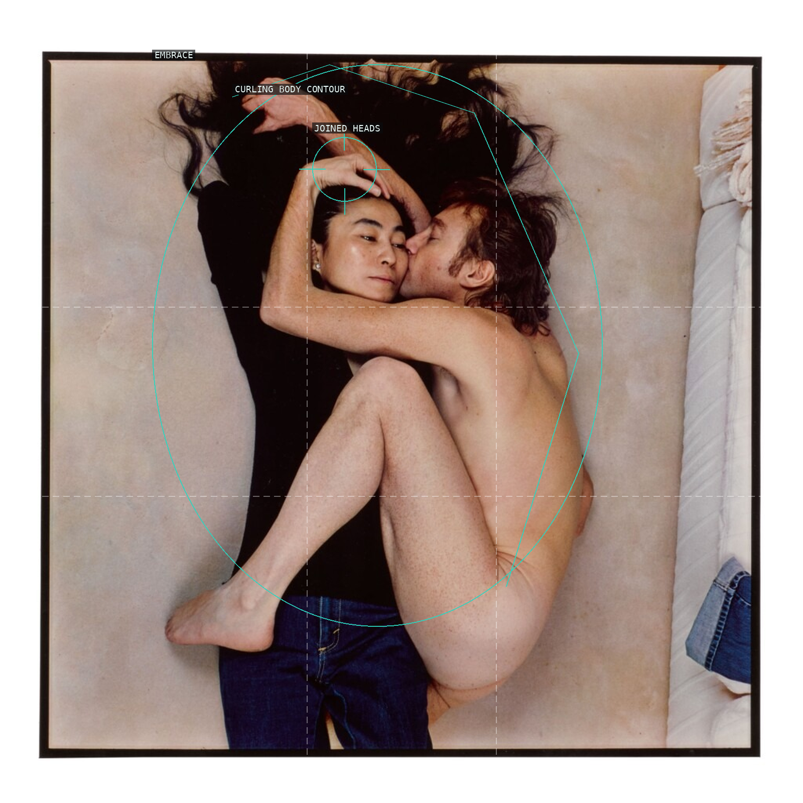
02 — John Lennon and Yoko Ono, New York (1980)
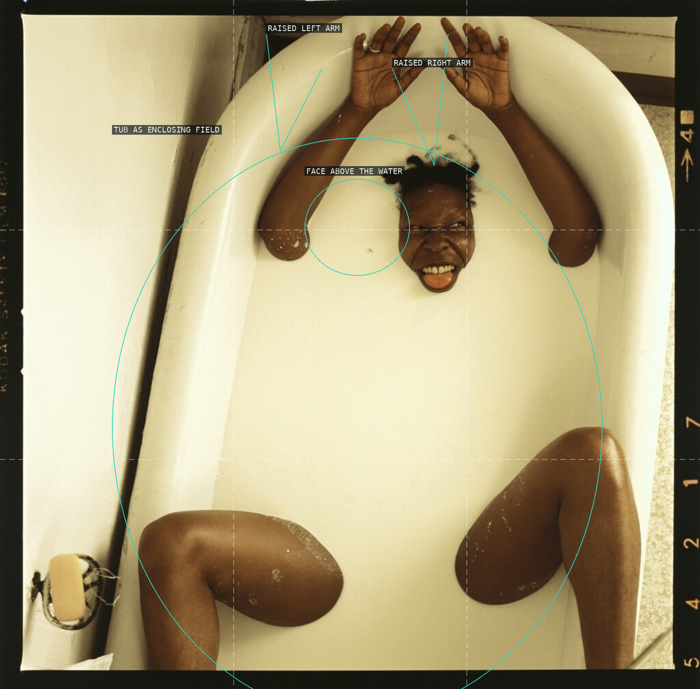
03 — Whoopi Goldberg, Berkeley, California (1984)
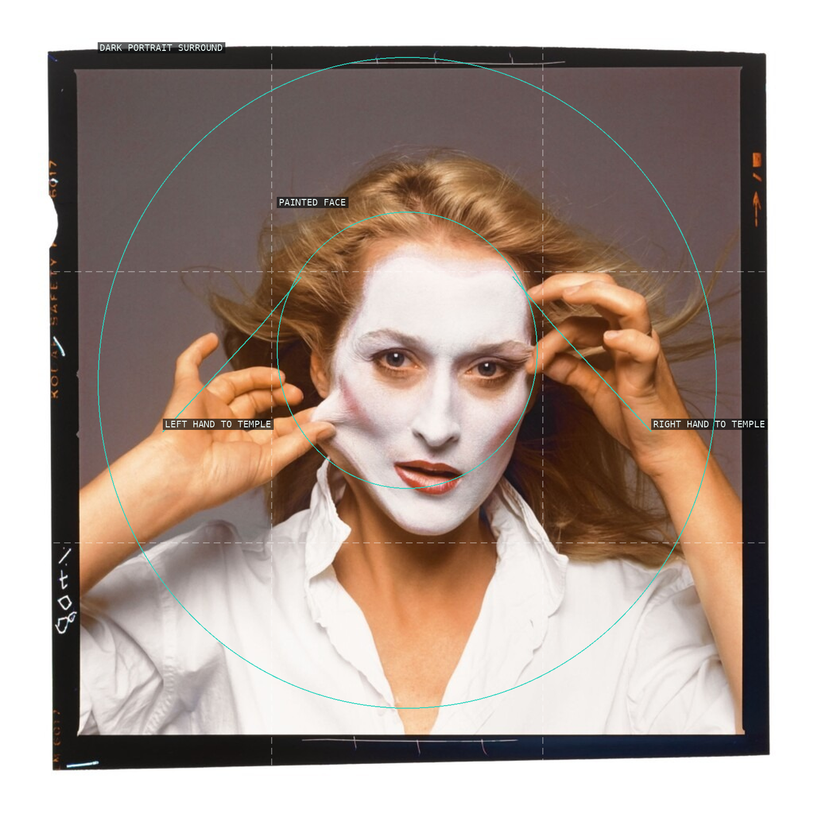
04 — Meryl Streep, New York City (1981)
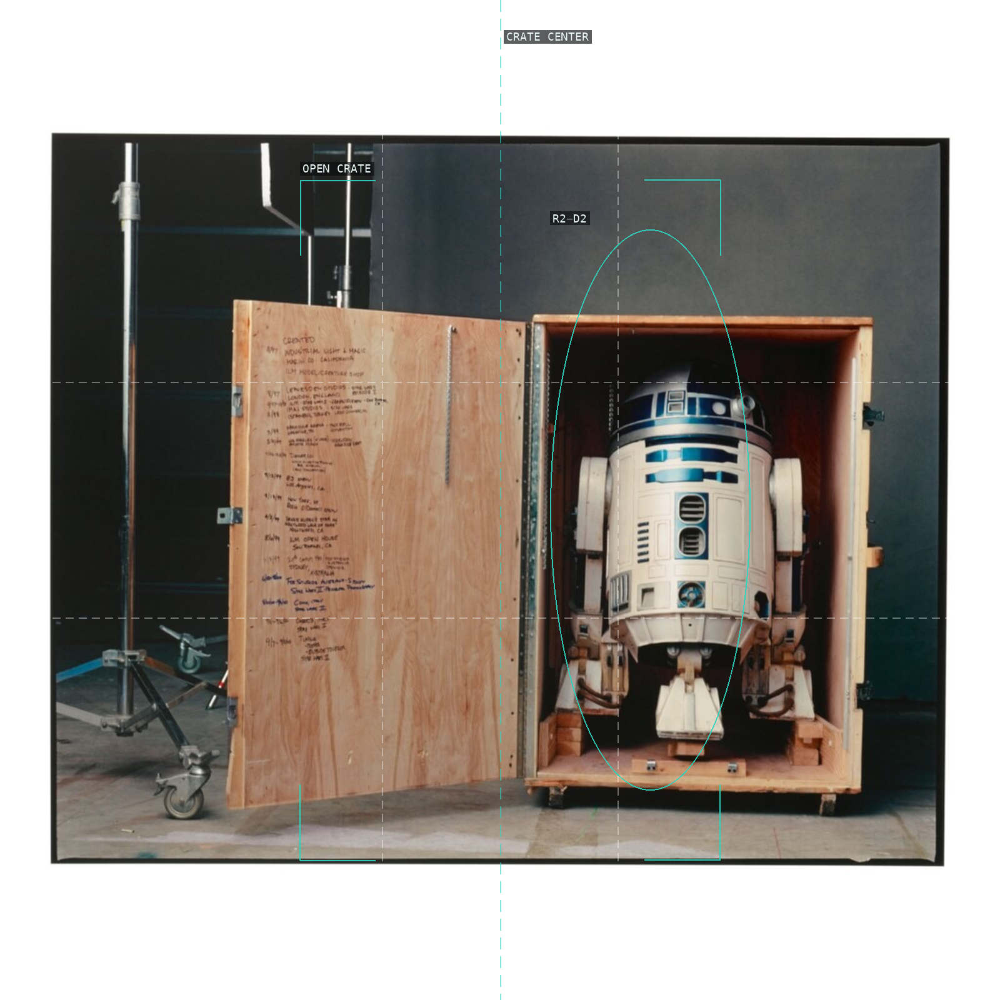
05 — R2-D2, Pinewood Studios, London (2002)
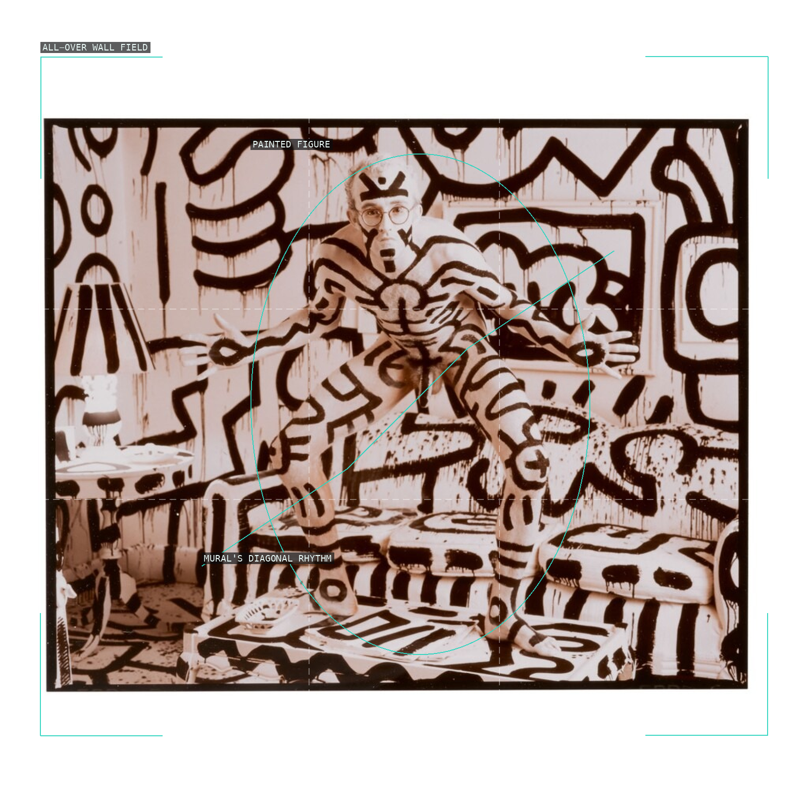
06 — Keith Haring, New York (1986)
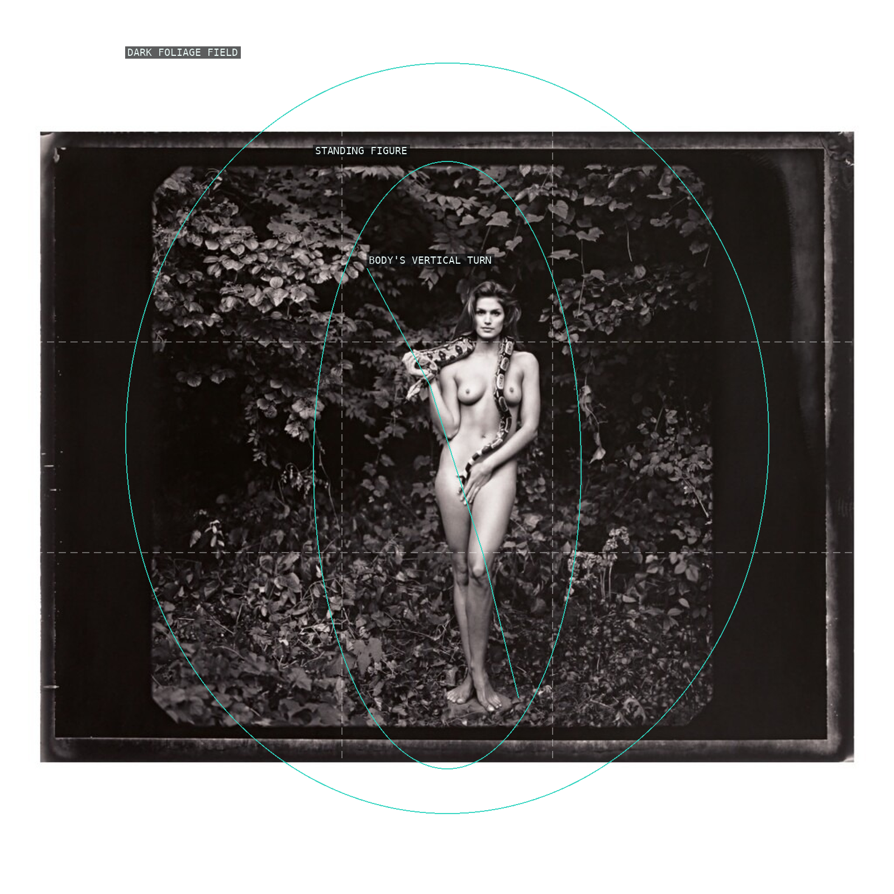
07 — Cindy Crawford, New York (1993)
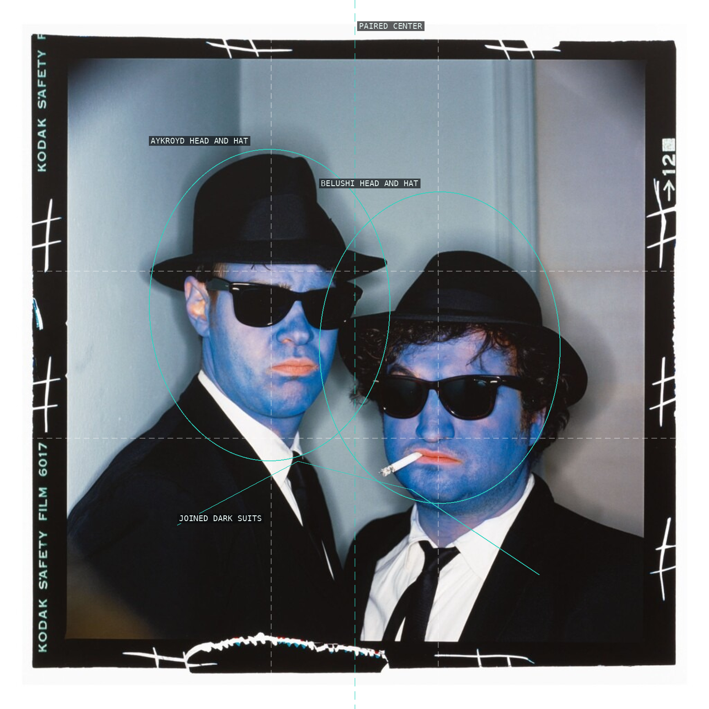
08 — Dan Aykroyd and John Belushi (The Blues Brothers), Hollywood (1979)
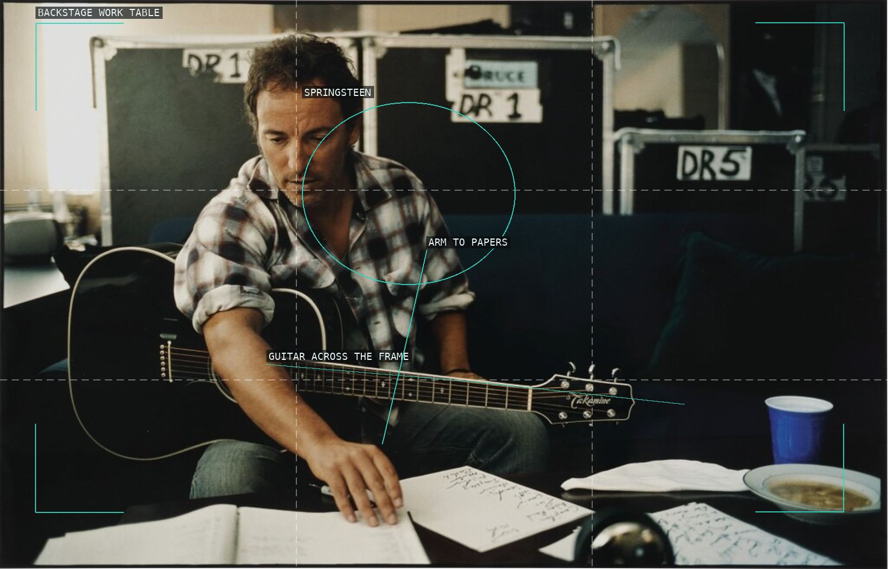
09 — Bruce Springsteen (1999)
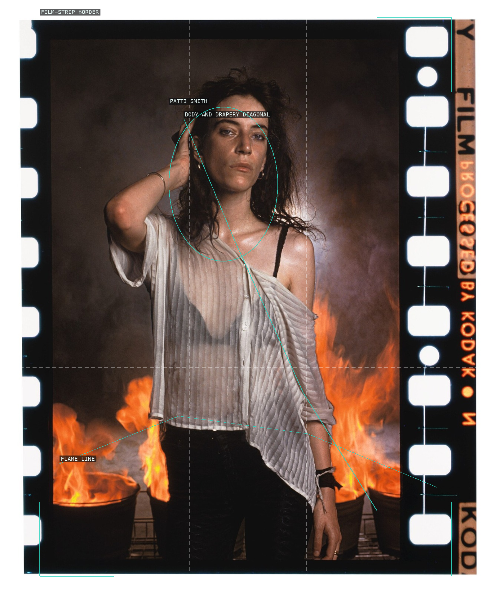
10 — Patti Smith, New Orleans (1978)
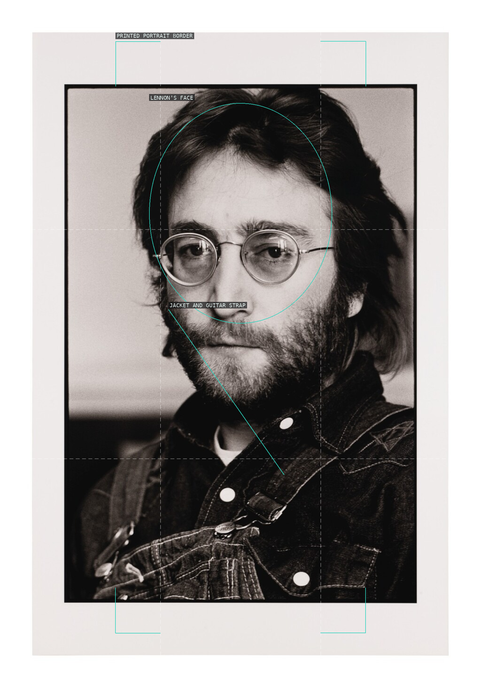
11 — John Lennon, New York City (1970)